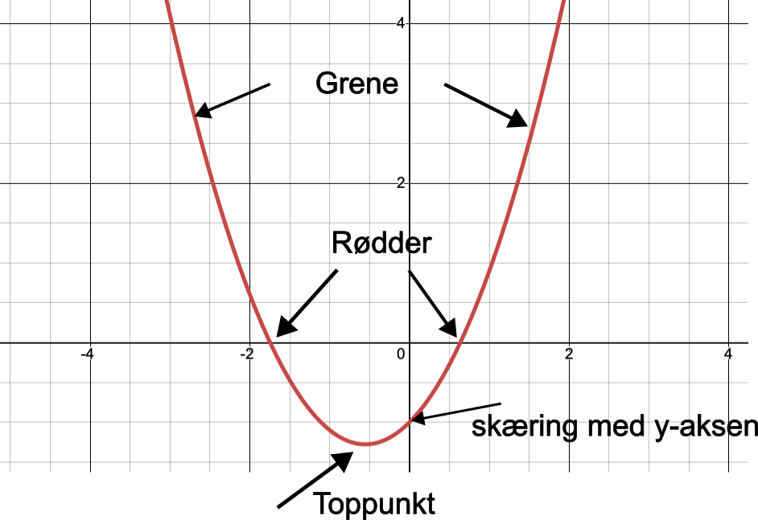
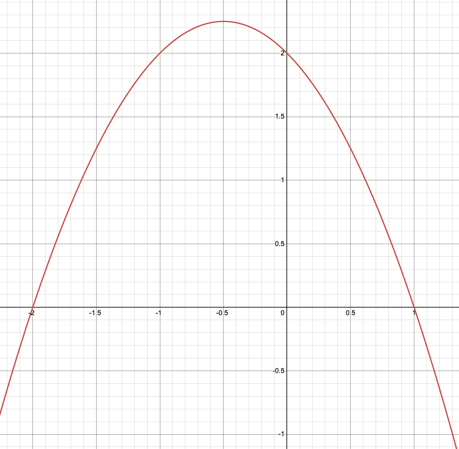
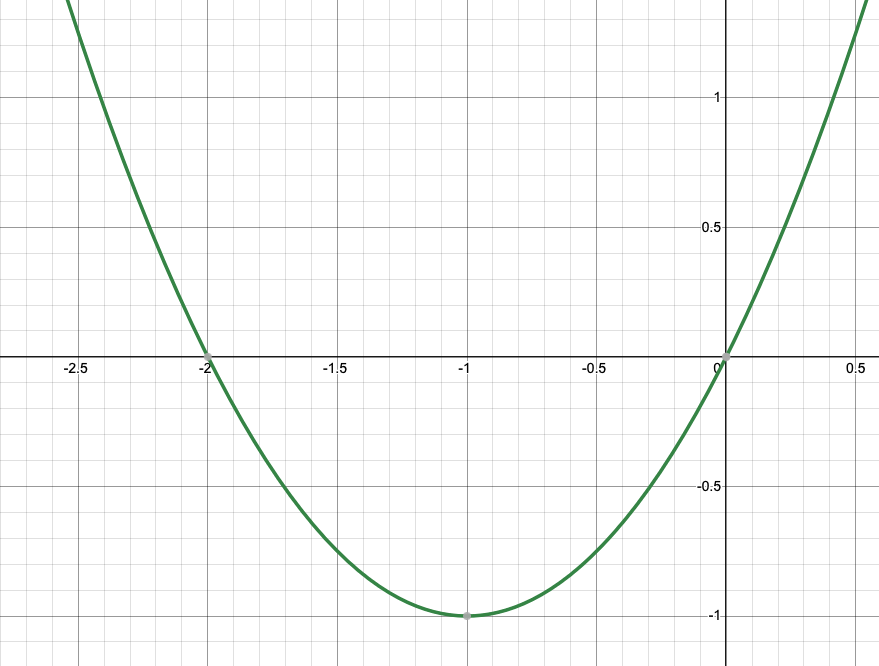

Når vi kigger på grafen for et andengradspolynomium (som kaldes en parabel), skal vi kunne udpege fem centrale ting:

Grene: Parablens "ben" eller sider. De kan enten vende opad eller nedad.
Toppunkt: Parablens absolutte vendepunkt (bunden af en dal eller toppen af et bjerg).
Skæring med y-aksen: Hvor grafen krydser den lodrette akse.
Rødder: De steder, hvor grafen skærer den vandrette x-akse.
Figur 1: Rød parabelOpgave 1: Undersøg og aflæs den røde graf
Kig godt på grafen herunder, og svar på spørgsmålene:

Korrekt løsning for Figur 1:
1. Grenene vender nedad (sur parabel, hvilket betyder at \(a < 0\)).
2. Skæring med y-aksen er i (0, 2).
3. Toppunktet ligger præcis på toppen i (-0.5, 2.25).
4. Rødderne (skæring med x-aksen) ligger i \(x = -2\) og \(x = 1\) (skrives som -2,1).
Kopiér denne besked til Gemini, hvis du er i tvivl om, hvordan man aflæser:
Figur 2: Grøn parabelOpgave 2: Undersøg og aflæs den grønne graf
Kig nu på den grønne graf herunder, og udfyld de tomme felter:

Korrekt løsning for Figur 2:
1. Grenene vender opad (glad parabel, hvilket betyder at \(a > 0\)).
2. Skæring med y-aksen er i (0, 0).
3. Toppunktet ligger helt i bunden i (-1, -1).
4. Rødderne er -2,0 (den ene rod er præcis i skæringen med y-aksen!).